Building at the intersection of hardware, AI & software.
I develop embedded and IoT systems, deploy machine learning at the edge, and build software tools. I enjoy taking projects from circuit-level implementation to working prototypes and user-facing applications.
Selected projects
Applied engineering, from prototype to deployment.
VERDE — Vegetation Environment Real-time Detection Engine
A hydroponics monitoring system combining water-quality sensors and computer vision to assess plant and nutrient conditions, then deliver confidence-scored recommendations and alerts.
Implementation & results
- Led a four-member thesis team in building a functioning hydroponics prototype with sensor–vision fusion.
- Trained YOLOv8 on 2,200 images (96.67% mAP@0.5) and a Random Forest classifier on approximately 5,000 sensor readings (100% 5-fold cross-validation), then deployed both on Raspberry Pi 5.
- Built and wired sensors, camera, ADS1115, relay-controlled pumps, and associated hardware; performed soldering and circuit testing, configured Raspberry Pi OS, and helped teammates establish remote access.
Prototype hardware

Computer vision & dashboard


Monitoring visualizations


Other projects
Software, controls, and applied systems.
Closed-Loop Water Quality Control System for RO Units (pH and TDS)
Arduino Uno, C++, pH and TDS Sensors, I2C LCD, Relay Control, Soldering
- Built and soldered the hardware for a working Arduino system that monitors pH and TDS and automatically runs RO or alkaline filtration until water is within safe limits.
- Reviewed the Arduino code against the project’s 7 objectives (threshold checks, relay control, recirculation) and designed the containers and materials.


Index 0 Student Services Map: Web-Based Student Services Map
React, Flask (Python), PostgreSQL, Leaflet, Git, GitHub, Flowcharting, Manual QA Testing
- Co-developed a web-based student services map, organizing the SQL tables and planning features through a system flowchart.
- Ran manual QA testing against the project objectives and delivered the full demo.
- Helped validate the map’s navigation and the project’s overall navigation and usability.
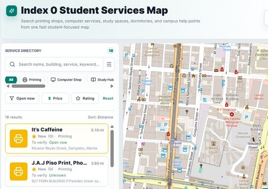
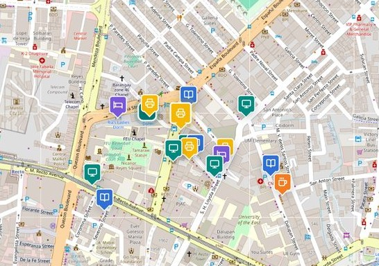
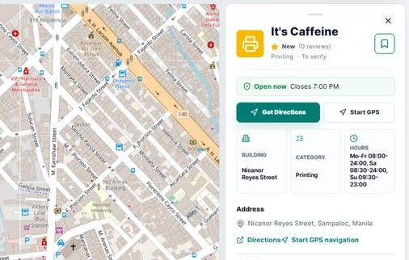
Solaris Nexus: Wuthering Waves Echo Build Scorer
React, TypeScript, Vite, Tailwind CSS, Tesseract.js, Git, GitHub, Vercel
- Built an open-source web app as a solo project that scores five-Echo builds using character-specific stat weights, detects active Sonata set bonuses, and grades each build from S to D.
- Added in-browser OCR (Tesseract.js) so Echo screenshots are read on the user’s device with no server upload. The parser is still being improved.
- Designed the data model and a mobile-responsive, game-style dark UI, with automatic deployment from GitHub to Vercel.

Education & recognition
BS Computer Engineering
FEU Institute of Technology, Philippines
Expected graduation: September 2027
- Financial Academic Scholarship (75% tuition)
- 3rd Year GPA: 3.72/4.00, ranked 3rd in the program (2025–2026)
- Top Performing Student, School Year 2025–2026
- Dean’s Silver Lister · 1st–3rd Term, 2025–2026

Certifications & courses
Professional credentials and technical training.
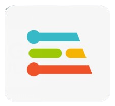
Edge AI
Edge Impulse · November 25, 2026- Cisco Certified Support Technician (CCST) Networking
Cisco · November 26, 2026 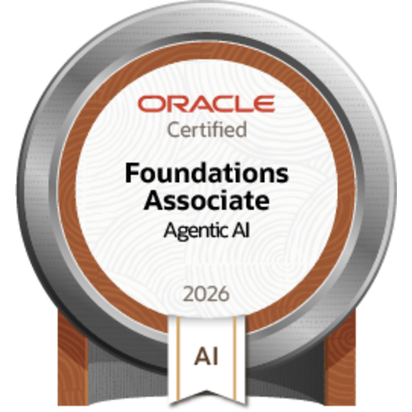
Agentic AI Certified Foundations Associate
Oracle · November 24, 2026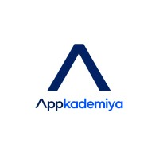
NetOps Certified Engineer (NTO-101)
Akademiya · November 24, 2026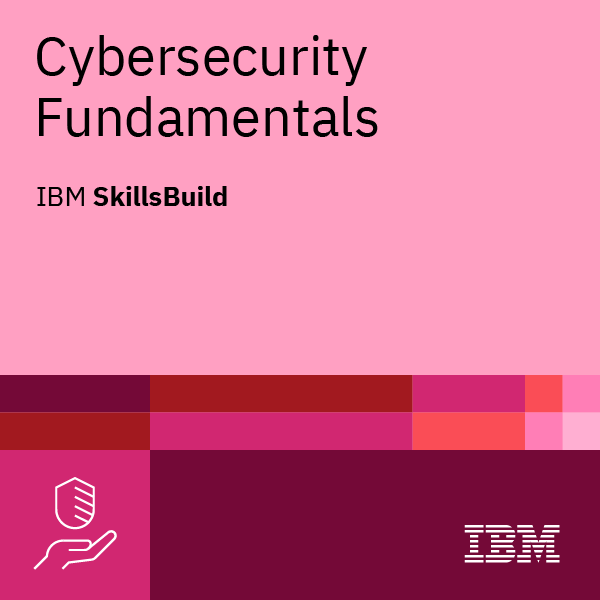
Cybersecurity Fundamentals
IBM · November 22, 2026- Introduction to Cybersecurity
Cisco · November 21, 2026
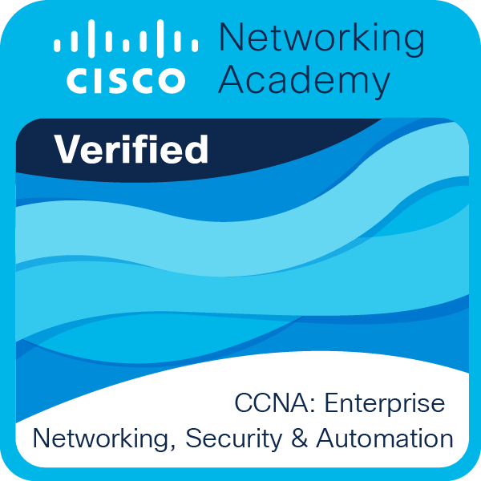
CCNA: Enterprise Networking, Security, and Automation
Cisco Networking Academy- CCNA: Switching, Routing, and Wireless Essentials
Cisco Networking Academy 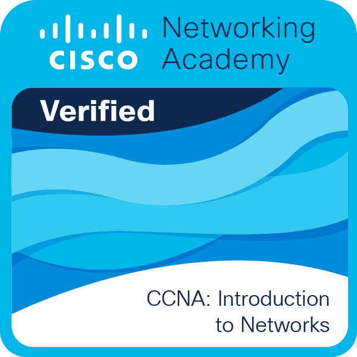
CCNA: Introduction to Networks
Cisco Networking Academy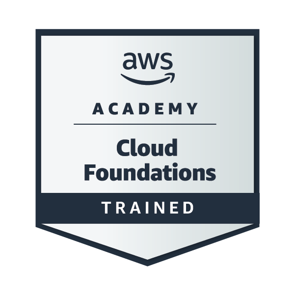
AWS Academy Graduate – Cloud Foundations
AWS Academy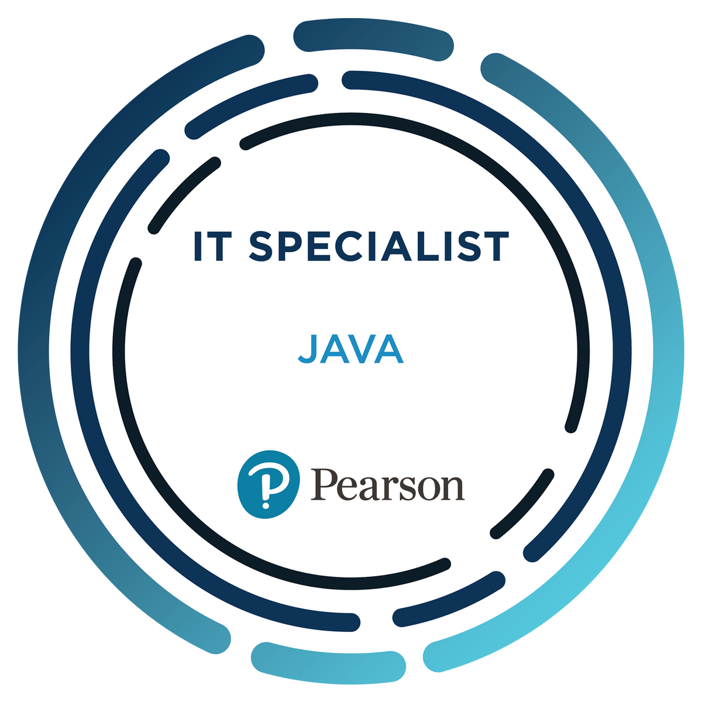
Information Technology Specialist: Java
Certiport- Information Technology Specialist: Python
Certiport
Technical skills
Grouped by practical areas of work.
Programming
Python, C++, Java, JavaScript, TypeScript, HTML/CSS, HDL, Assembly
Embedded & hardware
Raspberry Pi, Arduino, ESP, PCB and CAD design, 3D modeling, circuit testing
AI & computer vision
YOLOv8, OpenCV, PyTorch, scikit-learn, Random Forest
Web development
React, Flask, Tailwind CSS, Vite
Database & tools
SQL, PostgreSQL, Git, GitHub, Quartus, AutoCAD
Networking & cloud
Cisco networking coursework, AWS Academy Cloud Foundations
Leadership & involvement
AI in Network Security
Organizer · May 2026
Helped organize a seminar focused on AI applications in network security.
Other seminars
- Automation Mindset: Think Like an Efficiency Engineer — Participant, May 2026
- OpenAI Campus Launch: Early Prompt Engineering — Attendee, June 2026
- CODEX for Technical Users (AI Campus Launch) — Attendee, June 2026
Computer Engineering Organization
FEU Institute of Technology
Member · September 2023 – present
Participates in organization events and activities, including CpEO: Pioneers of Progress (2025).
Let’s build something meaningful.
Open to internship opportunities and collaborative engineering projects.
Supplementary design work
STS group projects designed in Canva, with research input from my group.